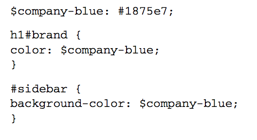
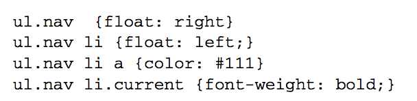

Sass es una extensión de CSS escrita en ruby que añade dinamismo y facilita el trabajo en las hojas de estilo. Una de las principales ventajas que nos brinda al trabajar con Sass esque nos permite eliminar o disminuir el código repetido:
Variables
Una de las primeras funcionalidad que nos brinda es el de las variables :

Uno de los principales beneficios de Sass es las variables que trae a la CSS. Las variables le permiten a los valores CSS de nombre que use varias veces y luego referirse a ellos por nombre en lugar de repetir una y otra vez el valor. También puede nombrar sólo usa una vez para dejar más claro lo que son para los valores. En vez de hacer find/replace para poder cambiar cosas en las hojas de estilo se maneja con variables.
Para su declararlas se coloca después de un signo de “$”, por ejemplo
$highlight-color: #abcdef;
Y para referenciarlo se hace de manera natural como se presenta en el siguiente ejemplo:
$highlight-color: #abcdef;
$highlight-border: 1px $highlight-color solid;
.selected {
border: $highlight-border;
}
Nested Selectors
Por otro lado también nos da la funcionalidad de utilizar “nested selectors”. Dicha funcionalidad permite que las hojas de estilo sean mas legibles y más mantenibles.

| Listing 1.2 Nesting CSS selectors ul.nav {
float: right;
li { float: left;a{ color: #111;
}
&.current {
font-weight: bold;
}} } |
Cuando se está escribiendo un montón de estilos de la misma sección de la página de destino, a menudo se necesita escribir una y otra vez el mismo id:
#content article h1 { color: #333 }
#content article p { margin-bottom: 1.4em }
#content aside { background-color: #eee }
Entre las cosas importantes que uno debe de considerar para los nested selectors son los caracteres especiales que permiten realizar ciertas funcionalidad.
& Parent Selector
Normalmente sass lo que traduce a css en un nested selector son los elementos que se describen por dentro separados con un espacio. El caracter especial & nos logra eliminar dicho espacio para así poder definir ciertas clases como el :hover (que no ocupa espacio) o otra clase definida dentro del selector.
Ejemplos :
article a {
color: blue;
&:hover { color: red
}
Child and sibling combinators: >, +, and ~
En Css existen tres combinadores utilizados para condicionar ciertas regalas de acuerdo en como esten posicionados o colocados con respecto a su clase padre o clases vecinas.
- > Este combinador indica que solo se debe de tomar en cuenta las reglas si la clase es directamente hija de la clase propuesta.
article section { margin: 5px }
article > section { border: 1px solid #ccc }
- + Este combinador dice que solo debe de aplicarse las reglas si el elemento con la clase esta posesionada directamente a la par del elemento vecino
header + p { font-size: 1.1em }
- ~ Este combinador indica que solo debe de aplicarse la regla al siguiente elemento con la clase que le sigue al elemento vecino , sin importar los otros elementos que puedan estar en medio.
article ~ article { border-top: 1px dashed #ccc }
Y esto en nested selectors se puede ver representado de la siguiente manera :
article {
~ article { border-top: 1px dashed #ccc }
> section { background: #eee }
dl > {
dt { color: #333 }
dd { color: #555 }
}
nav + & { margin-top: 0 }
}
Mixings
Complementando las variables tenemos los mixings. Que son como clases o funciones donde un define una estructura deseada y algunos parámetros a variar. Por ejemplo en el siguiente código se puede optimizar y reducir la reusabilidad de código utilizando esta funcionalidad.
Listing 1.6 Mixins help you remove redundant styles #header ul.nav {
float: right;
} #header ul.nav li {
float: left;
margin-right: 10px;
} #footer ul.nav {
margin-top: 1em;
} #footer ul.nav li {
float: left;
margin-right: 10px;
} | Listing 1.7 Mixins with variables @mixin horizontal-list($spacing: 10px) {
li {
float: left; margin-right: $spacing;
}
} #header ul.nav { @include horizontal-list;
float: right;
} #footer ul.nav {
@include horizontal-list(20px);
margin-top: 1em;
} |
Herencia
Ademas de esto se puede utilizar herencia entre las clases de css. A continuación se presentan dos ejemplos donde se utiliza dicha técnica:
Listing 1.9 Some CSS for error messages .error {
border: 1px #f00;
background: #fdd;
} .error.intrusion {
font-size: 1.2em;
font-weight: bold;
} .badError {
@extend .error;
border-width: 3px;
} |
%button-reset {
margin: 0;
padding: .5em 1.2em;
text-decoration: none;
cursor: pointer;
} .save {
@extend %button-reset;
color: white; background: #blue;} .delete {
@extend %button-reset;
color: white;
background: red;
} |